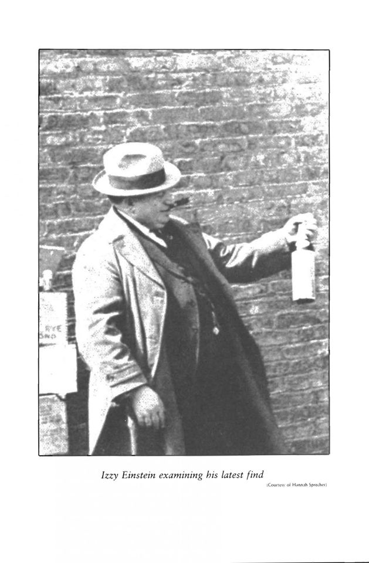

Wine: Some apparent errors and inconsistencies in halacha

Listen to the audioMP3
Source sheets
Zoom chat (12 messages)
- 21:15:04Steven Goldburdwinefolly.com/tips/winemaking-from-start-to-finish-told-i…
- 21:19:47Steven Goldburdwinefolly.com/deep-dive/what-is-port-wine/
- 21:20:13Steven Goldburdwinefolly.com/deep-dive/what-is-port-wine/
- 21:20:44Steven GoldburdThe biggest difference is that sherry is made exclusively from white grapes, while port can be made from either red or white (though port is almost always produced with red grapes.
- 21:20:58Steven GoldburdTaking over for Doc here :)
- 21:28:45Steven GoldburdGlass bottles began to be used in the 17th century, although they were different shapes to the wine bottles of today. They were squat, with large bases and short necks. By the 1820s wine bottles resembled the traditional ones we use today.
- 21:42:28Steven Goldburdwhiskyadvocate.com/how-to-make-whisky/
- 22:02:16Doci2.wp.com/www.jweekly.com/wp-content/uploads/2019/12/jewi…
- 22:04:38Docnytimes.com/2015/11/30/world/middleeast/with-indigenous-g…
- I saw this story a few years ago, Israeli wine makers replanting and working with ancient Israel strains of grapes. They got them from Arab collaborators who kept the Israeli sales on the down-low
- 22:05:12DocIn some states, a person only needed 10 signatures to a petition attesting that he was a rabbi in order to get a rabbinical license from the secretary of state. License in hand, the only obstacle to the wine permits was a list of congregation members. Fake rabbis took names from city directories, phone books and other public listings to create congregations.
- According to a Sept. 9, 1922 article in the San Francisco Examiner, The Jewish World newspaper had claimed Irish, Swedish, Scottish and Greek residents of San Francisco were getting monthly supplies of sacramental wine “under the names of Goldstein, Blumberg, Silverstein, Levinsky and other adopted Jewish cognamens.”